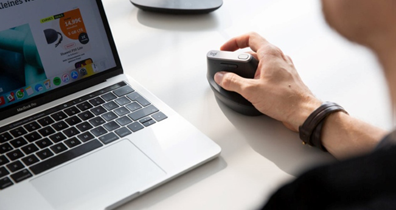

디자인
몸이 편하면 작업도 더 잘 됩니다. 더욱 편안하고 인간 친화적인 작업공간을 만드는 것이 로지텍의 미션인 이유죠. 로지텍은 여러분이 작업에 사용하는 도구를 설계, 개발, 재창조합니다.
information
인체공학이란?
-
인체공학 제품으로 편안함을 더해보세요.
통증없이 중요한 일에만 집중할 수 있습니다.생산성 향상 -

Ergo 제품은 손, 손목, 팔의 위치를 자연스럽게
편안한 자세로 유도합니다.자연스럽고 편안한 자세 -
자연스러운 자세는 근육 활동을 줄여주고
주요 근육 긴장을 완화합니다.근육 긴장 완화
환경
긍정적인 미래를 디자인하다
지구와 사회에 더 나은 미래를 만들려면 새로운 문제를 만들지 않고 큰 문제를 해결하는 색다른 접근법이 필요합니다.
로지텍이 더욱 지속 가능하고 공정하며 창의적인 세계를 위해 새로운 디자인 방식을 선도하는 방법을 확인해보세요.
FAQ
-
로지텍 장비 세척방법대부분의 경우, 아이소프로필알코올(소독용 알코올) 또는 무향 살균 물티슈를 사용하고 약간 더 힘을 주어 닦아내도 됩니다.
소독용 알코올이나 티슈를 사용하기 전에 먼저 눈에 잘 띄지 않는 부분에서 테스트하여 변색이 발생하거나 장치의 프린팅이 지워지지 않는지 확인하는 것이 좋습니다. -
마우스 보관로지텍은 오염에 강하고 간편하게 청소할 수 있는 마우스 소재를 세심하게 선택합니다. 하지만 밝은 색상(오프 화이트 및 로즈 핑크)은 일반적인 사용에도 더욱 쉽게 더러워집니다.
다음을 따르면 마우스를 오랫동안 깨끗하게 유지할 수 있습니다.
매주 마우스를 세척하여 제거하기 어려운 오염이 생기는 것을 예방합니다(세척 방법은 다음 질문 참조).
마우스를 사용하는 동안 강한 색상이나 기름기가 있는 간식을 먹지 마십시오(과일, 칩, 간식, 사탕 등). 마우스 사용 중 얼굴을 만지지 마십시오. 이렇게 하면 장치에 기름기, 메이크업, 크림, 로션, 향수 등의 물질이 묻지 않습니다. 마우스 사용 중에는 손에 로션을 사용하지 마십시오. 손에 잉크 얼룩이 있는 경우, 마우스를 만지기 전에 알코올 티슈로 얼룩을 닦아 주십시오. -
Chrome OS 지원Bluetooth 저에너지 직접 연결을 사용하여 Chrome OS 호스트 장치에 마우스를 페어링하는 것을 권장합니다. 이 연결을 사용하면 모든 기능을 사용할 수 있습니다.
BOLT 수신기를 사용하여 Chrome OS 호스트 장치에 마우스를 연결해야 하는 경우, 일부 기능을 사용하지 못할 수도 있다는 것을 유의하십시오.